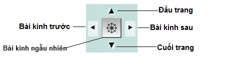
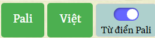
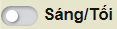
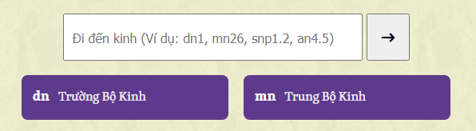
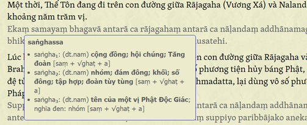
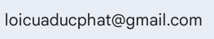

Về trang web này
Trang web này được phát triển dành cho Cộng đồng dựa trên giấy phép Creative Commons Attribution-NonCommercial 4.0 (CC BY-NC 4.0) .
Điều khoản sử dụng: Bạn được phép chia sẻ, sao chép và phân phối lại trang web hoặc các công cụ trên trang này ở bất kỳ phương tiện hoặc định dạng nào. Bạn cũng được phép chỉnh sửa hoặc phát triển thêm dựa trên trang này. Người cấp phép sẽ không thu hồi các quyền này miễn là bạn tuân thủ các điều khoản dưới đây:
- Ghi nguồn — Bạn phải ghi rõ nguồn, cung cấp liên kết đến trang này, và cho biết nếu có sự thay đổi so với bản gốc.
- Phi thương mại — Bạn không được sử dụng trang này cho mục đích thương mại.
- Không thêm vào các hạn chế bổ sung — Bạn không được áp dụng các điều khoản pháp lý hoặc biện pháp công nghệ nhằm hạn chế hợp pháp người khác thực hiện bất kỳ điều gì mà giấy phép này cho phép.
--ooOoo--
1. Giới thiệu
Lời Của Đức Phật là một công cụ website được xây dựng dựa trên nền tảng web của thebuddhaswords.net, nhằm mang đến cho người đọc bản dịch đáng tin cậy và dễ tiếp cận nhất về lời dạy của Đức Phật trong kinh điển Nikaya, bằng cả tiếng Việt và tiếng Pali. Trang web không chỉ đơn thuần là một kho tư liệu, mà còn là một công cụ học thuật, nghiên cứu hiện đại, giúp người dùng tra cứu, đối chiếu và tìm hiểu kinh điển một cách thuận tiện.
Với sự hỗ trợ của Digital Pali Dictionary, gần như toàn bộ từ vựng Pali đều có thể được tra cứu tức thì, giúp việc học và nghiên cứu trở nên dễ dàng. Trang web cũng được thiết kế để hoạt động tốt trên nhiều thiết bị, từ máy tính đến điện thoại, và có thể sử dụng ngoại tuyến thông qua ứng dụng Kiwix hoặc từ bản lưu trữ Offline. Mục tiêu của Lời Của Đức Phật là tạo ra một không gian học pháp thân thiện, nơi mọi người có thể tiếp cận giáo lý nguyên thủy của Đức Phật, đồng thời tận dụng công nghệ hiện đại để nâng cao trải nghiệm nghiên cứu.
Trang web hoạt động trực tuyến như một website bình thường và có thể sử dụng ngoại tuyến với đầy đủ chức năng.
Bảng điều khiển
Tiện ích bảng điều khiển xuất hiện ở bên phải màn hình cho phép điều hướng giữa các trang trước và sau, cũng như giữa đầu trang và cuối trang.
Ấn nút sẽ chuyển đến một bài kinh ngẫu nhiên trong một bộ kinh ở vị trí hiện tại, nếu ở trang chủ thì sẽ chọn ngẫu nhiên trong cả 5 bộ Nikaya, hoặc nếu đang bạn xem kinh theo chủ đề, thì nó sẽ cho bạn một chủ đề ngẫu nhiên. Ngoài ra phím ngẫu nhiên ở menu trên cùng cũng sẽ chọn cho bạn 1 bài kinh ngẫu nhiên, nhưng ở trong toàn bộ Đại Tạng Kinh Nikaya.

Ở đầu mỗi trang có một nút chuyển đổi để bật/tắt từ điển Pali. Gạt nút để bật từ điển Pali. Chế độ từ điển Pali sẽ duy trì cho đến khi bạn gạt tắt nút này. Khi Pali đang hiển thị, di chuột lên một từ Pali sẽ hiển thị bản dịch tiếng Việt của từ đó. Ngoài ra trên thanh menu còn có nút Pali để chỉ hiển thị kinh Pali, nút Việt để chỉ hiển thị kinh Tiếng Việt.

Chế độ tối
Nếu bạn thích chế độ tối, nút ở góc trên bên trái màn hình cho phép chuyển đổi giữa chế độ sáng và tối.

Điều hướng trên trang web
Sử dụng thanh điều hướng ở trang chủ để đi nhanh đến các trang khác. Ví dụ: dn3 sẽ mở đến Trường Bộ Kinh bài 3. Bạn có thể tra bảng mã viết tắt các bộ kinh ở dưới thanh.

Văn bản Pali
Khi Pali đang hiển thị, di chuột lên một từ Pali sẽ hiển thị bản dịch tiếng Việt của từ đó. Nhờ sự tích hợp của Từ điển Pali, gần như tất cả các từ Pali đều có bản dịch tiếng Việt. Bản dịch sẽ hiện ra kèm theo.

Tìm kiếm toàn bộ trang web
Để tìm kiếm nội dung tiếng Việt của toàn bộ trang web, hãy nhấn vào liên kết Tìm kiếm nội dung tiếng Việt ở phần đầu mỗi trang.
Để tìm kiếm nội dung Pali của toàn bộ trang web, hãy nhấn vào liên kết Tìm kiếm nội dung Pali ở phần đầu mỗi trang.
Xin lưu ý rằng lần đầu tiên mở một trong hai trang tìm kiếm có thể mất một chút thời gian để tải… sau đó sẽ nhanh hơn.

Kết quả tìm kiếm sẽ hiển thị dưới dạng liên kết dẫn đến trang liên quan nhưng không đến đúng vị trí trong trang. (Gợi ý: dùng chuột phải | Mở trong tab mới nếu bạn muốn giữ kết quả hiển thị). Bạn sẽ cần Tìm kiếm trên trang hiện tại (như bên dưới) cho đến khi phiên bản sau tích hợp hai loại tìm kiếm này.
2. Cài đặt offline bằng Kiwix.
Kiwix là một ứng dụng miễn phí cung cấp khả năng truy cập ngoại tuyến vào các nội dung giáo dục(Xem thêm tại: kiwix.org/en/about_us/). Kiwix dễ dàng chạy trên hầu hết mọi thiết bị và đơn giản hóa quá trình cài đặt.
Truy cập Trang Ứng dụng Kiwix
Android
Nếu bạn dùng thiết bị Android, hãy theo liên kết Direct APK để cài đặt Kiwix. Lưu ý rằng phiên bản trên Play Store bị giới hạn chỉ quét và mở tệp ZIM từ thư mục riêng của ứng dụng, trong khi bản đầy đủ có thể mở tệp ZIM từ bất kỳ vị trí lưu trữ nào.
Xin lưu ý rằng trong quá trình cài đặt bạn cần cho phép ứng dụng truy cập để đọc từ bộ nhớ cục bộ.
Windows
Nếu hệ điều hành của bạn là Windows, hãy tải và cài đặt Kiwix for Windows.
iOS và macOS
Nếu bạn dùng Mac hoặc iPhone, hãy theo liên kết đến App Store để tải Kiwix cho iOS và macOS. Nếu bạn dùng Mac, bạn cũng có thể theo liên kết macOS.dmg để cài đặt Kiwix.
GNU/Linux
Để cài đặt trên GNU/Linux, hãy làm theo hướng dẫn trong phần Kiwix for GNU/Linux.
Tải bản ZIM mới nhất của Lời Của Đức Phật.
Sau khi đã cài đặt Kiwix, hãy tải phiên bản ZIM mới nhất của Lời Của Đức Phật từ đây. Ngoài ra còn có các bản lưu trữ ở định dạng zip được dùng trong phương pháp cài đặt từ bản lưu trữ.
Đặt tệp ZIM đã tải vào vị trí phù hợp.
Chạy Kiwix và mở tệp ZIM.
Hoàn tất
3. Cài đặt từ bản lưu trữ của trang web
Bạn có thể gặp tình huống kết nối internet kém, hoặc không thể sử dụng PWA, hoặc đơn giản là bạn muốn có một phiên bản hoạt động của Lời Của Đức Phật trên USB, máy tính hoặc thiết bị Android. Trong những trường hợp như vậy, bạn cần tải phiên bản mới nhất, giải nén các tệp từ bản lưu trữ .zip rồi sao chép vào máy tính hoặc thiết bị.
Liên hệ
Chúng tôi rất biết ơn nếu nhận được thông báo về bất kỳ thiếu sót, lỗi, liên kết hỏng, v.v.
Vui lòng gửi email cho Lời Của Đức Phật tại địa chỉ:

Khi báo cáo liên kết hỏng hoặc lỗi cụ thể, xin vui lòng bao gồm URL, và nếu có thể, một đoạn trích của phần văn bản bị lỗi.